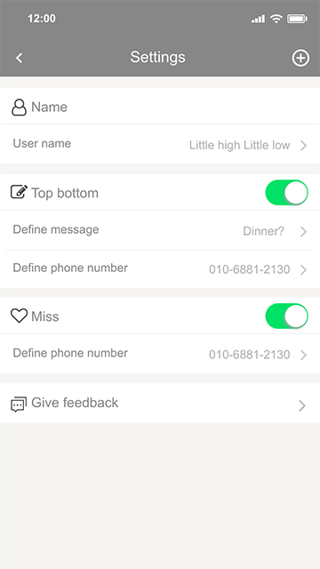

Software Framework
Interaction
UX Prototype

<
>
- 
Pat is an appliance combined with a mobile application which could provide a measurement of body temperature and data transferring, interaction and user-defined function bottom for the users.
There are millions of empty nesters in China now, especially in the second and third class city. The children work in the big city or business district and contact with their parents by phone call or message. And most of the parents are unwilling to proactively communicate with their children in order to reduce the concerns in their children's life.
The pressure of the middle generation in China is extremely heavy.
[Psychological gap brought by retiring] [Chinese tradition]
The elders expect to live with their children after their children becoming adults
[Policy]
One-child policy before the 2010s
[Pressure]
Work is too busy [Pressure] Raising two kids makes people having no time to take care of their parents
[Policy]
The permission of two kids after 2010s